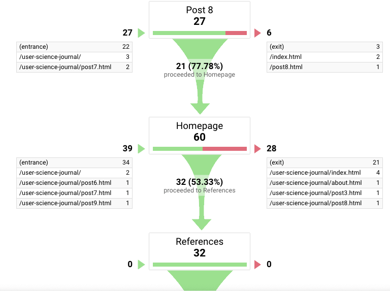

Now that the quarter has come to an end, in my final post for I will discuss my experience setting up goals, content experiment with AB test, and finally analyze all the data. To recap, for the past few weeks, I set up goals in Google Analytics to see how users were completing these goals to count as a conversion in Google Analytics, and what steps they took to get from point A to point B.
A big part of being a web developer is to understand your audience wants and be able to respond to their needs. Tools like Google Analytics and Optimize make this process easy and fast. It is during this testing phase that we analyze the data we collect and implement changes. Using Optimize, I set up a variant page with a blue start here button, and whole different homepage. My goal was to have users to go from the index page, click on the references link or the start button here which then takes them to the references page for GA to register a conversion goal and event.
As a result, I did get extensive feedback. First, let me talk about how I shared my blog? I started sending out the link to a couple of friends, classmates, and family members. I did not particularly mention anything to them, or what steps to take, I just wanted honest feedback. Most responses were mainly positive, with users saying that they liked the variant page, and others suggested a few changes to implement.
Overview
My initial set up was straight forward. I set up Google Analytics, added the tracking code to my head, and Google started tracking each visit. The data was misleading since it counted any visit to my website, including new and returning users. I realized that Google Analytics was also counting a user as new when they were off session for about half an hour. Below is an overview of all the results.
Overall results for the last quarterAs you can tell, this is broad data. According to Google Analytics, a new user is counted each time a device or browser loads your content for the first time. Returning users are those who have visited the site before and are returning to your websites. This part can get tricky though; If a user visits your site, deletes their browser cookies, and returns to your site, they are counted as a New User. The same will happen if a user switches devices or browsers on a return visit to your website.
Goals and funnel
To narrow things down to more accurate data, I set up a goal and funnel to see how these users were completing the goals and where they were dropping off. This step is particularly crucial if you are running promoting a particular product or service. As mentioned, my goal was to have as many visitors go to my references page. To better understand the data, I set up a goal to run for a specific time. Here is how this process was set up.
 The goal set up
The goal set up
Looking at the goal results below, you can see a spike in users who completed the goals.
Goal resultsNow for the funnel, the image shows the path users took to complete a goal. There were two ways to achieve the goals. One the user could go from the index page to the references page. Secondly, they could also go from post 8 to the index page then references page. The goals were completed with some users dropping off to different pages.
 Funnel results in GAThe goals were completed with some users dropping off to different pages. Keep in mind that this data also includes what I collected after doing my content experiment in Optimize.
Content Experiment Test
After getting feedback from multiple users, I decided to do a content experiment using the AB testing tool in Optimize. Users had responded saying that they wanted to see a different homepage without the YouTube video. In my last week's post, I had also mentioned that I had so many visitors land on the homepage, but a few clicked on the references link. I think this was due to the color. It matched also matched the background. Looking at the data in optimize on the image below.
The results after testingNow that I look at the results, the objective that I had set up did not get any data. Also looking at the same data in the pageviews section, the page with the video has higher data than the variant. I will run another test for a more extended period and see what I get.
Content Experiment Test
Google Analytics and testing have undoubtedly been an experience. There is so much to learn from these tools when the tests are set up correctly. I will change up my testing again and eventually update this post with new findings. I accidental set up the wrong objective, which kind of through my data off.